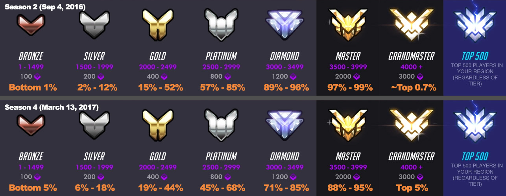
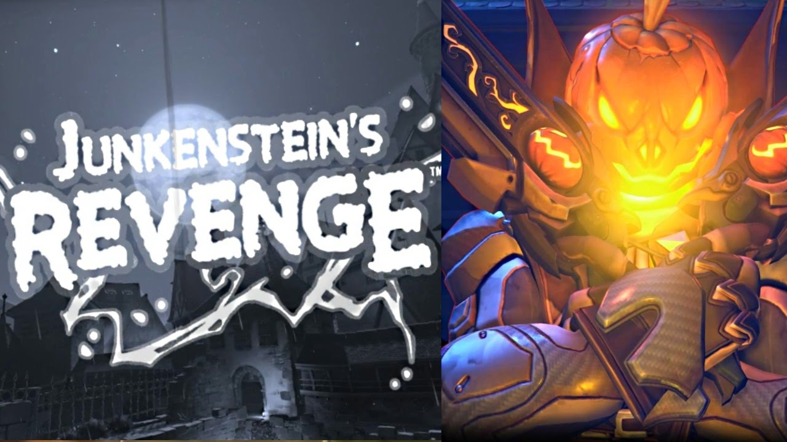

overwatch is a 6v6 team based game that consists of multiple champions all having there own type of skillset, you have (on a team) 2 supports (healers) 2 tanks (high health bar to protect allies) and 2 dps (damage per second), this makes it so you have to communicate with your team to win and this is a good idea in general to teach today's youth about teamwork and how it can help you progress in the future, staying on topic overwatch has had many good years in it's time and has bin put through the ringer, winning the 2018 game of the year award overwatch was once very popular but has lately lossed most members of it's community. overwatch being an fps game and the variaty of champions to choose from it drew in alot of people from multiple community's such as call of duty and apex legends, some even came from mariokart, for example redshell is a lucio main that played mariokart alot before overwatch and even still play's it to this day, he is now a top 500 lucio main aiming for rank 1 while also proving to the world you can climb to any rank with lucio. overwatch has a ranking system as seen below  the ranking system goes from bronze to top 500 and every 500 sr you gain a rank which would be good but, with people making smurf account's (account's with lower sr than they have on thier main account) playing in lower ranks made it harder for people to climb in the game, this is why overwatch has seen a considerable downtrend for quite a while now. with multiple arcade modes and quickplay being a relaxing aspect to the game, also giving people a option to play non competetive game modes and giving the user a bit of the story for each character is some arcade mode games like junkensteins's revenge.  the general idea was to set ranks so people could play against people with the same skill level as you and so everyone would have a fair chance.